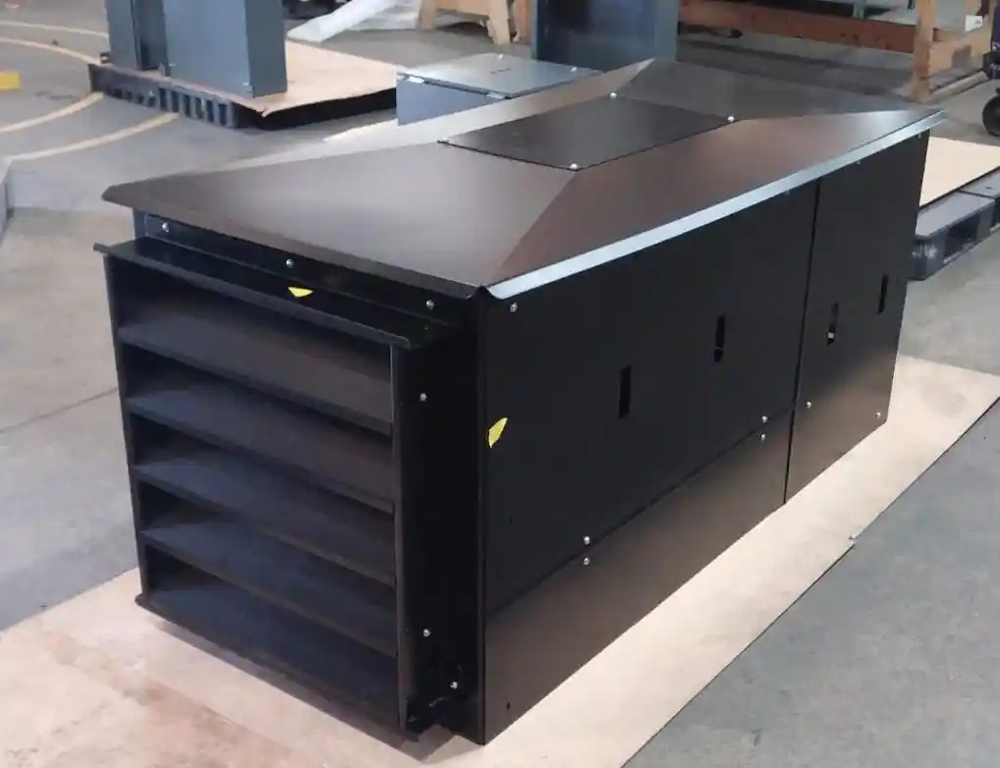
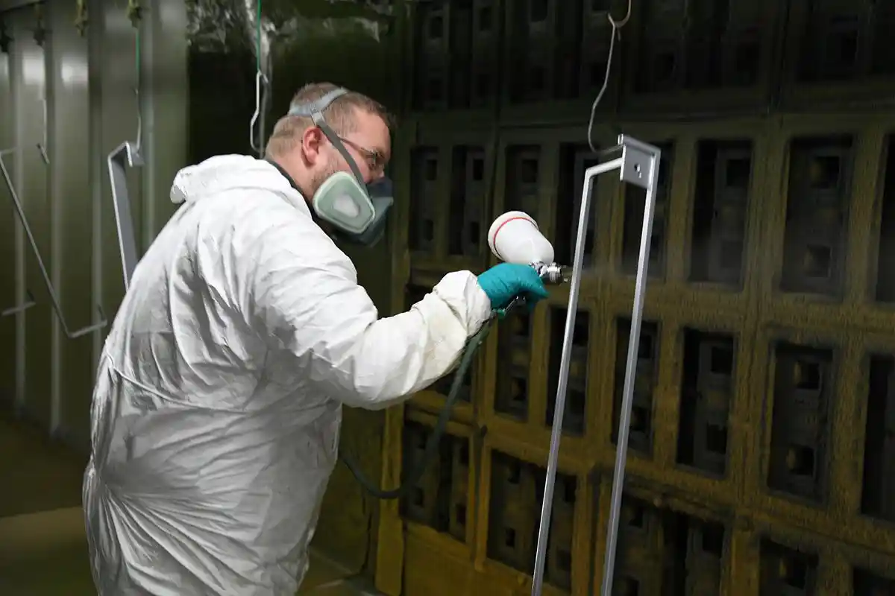
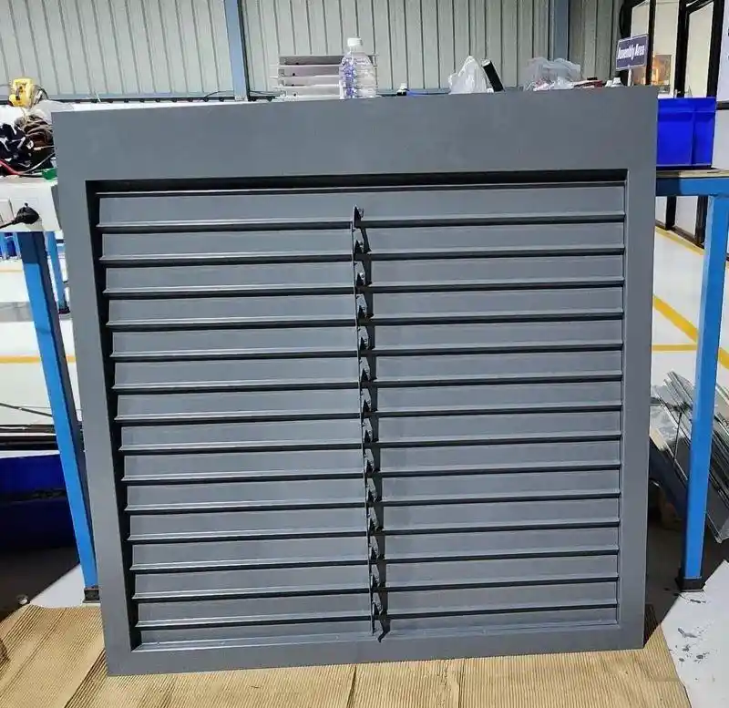
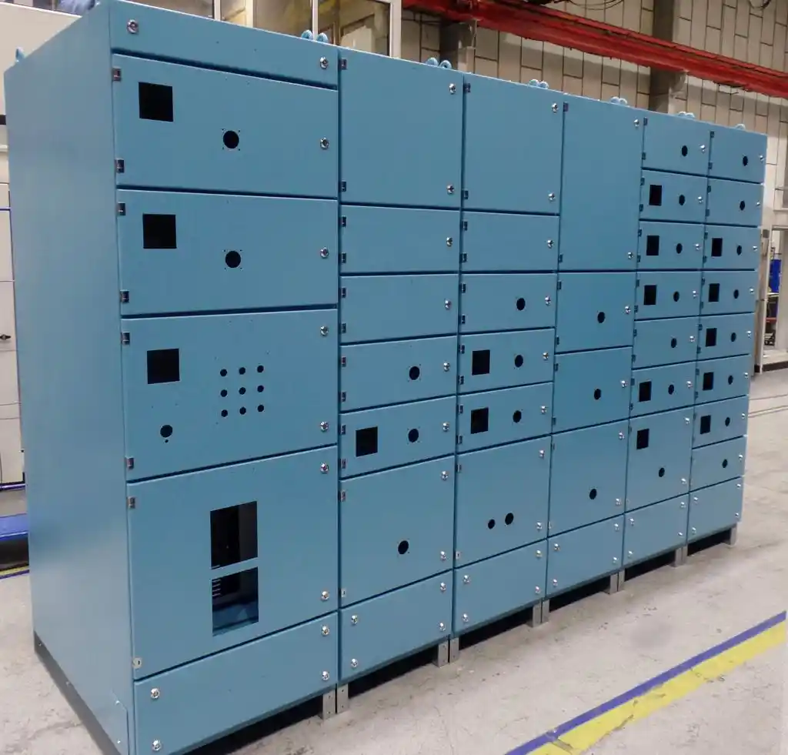
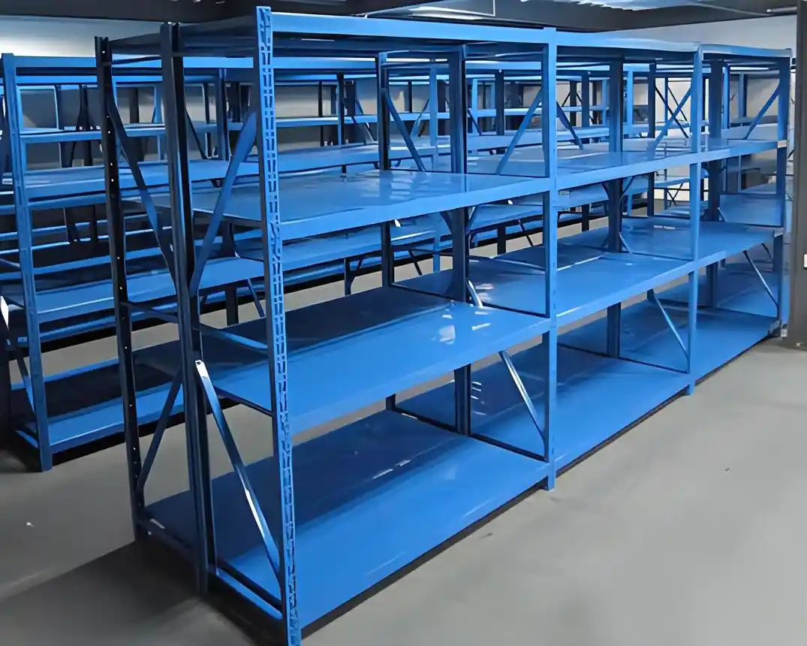
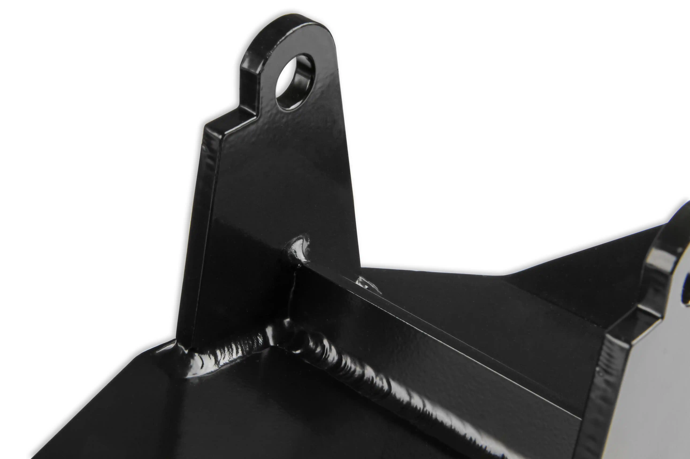
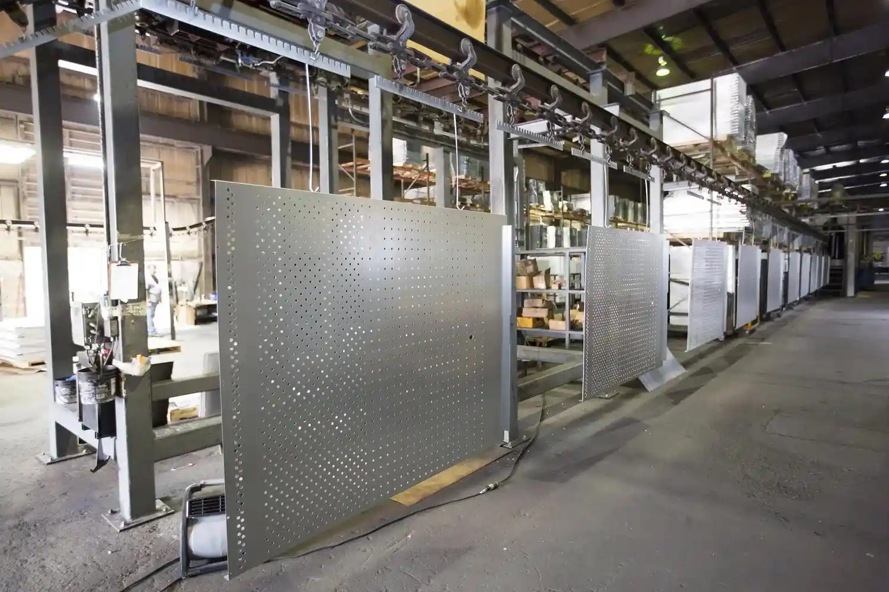

01
01Aplicaciones
¿Qué piezas metálicas se pueden pintar con pintura electrostática?
Gabinetes, rejillas, soportes, racks y otras piezas que pueden evaluarse para recubrimiento en polvo.
Leer artículoSi tienes dudas sobre pintura electrostática, materiales o acabados, aquí encontrarás explicaciones claras para orientar tu proyecto.
Mostrando 18 artículos
01Gabinetes, rejillas, soportes, racks y otras piezas que pueden evaluarse para recubrimiento en polvo.
Leer artículo 02
02Los factores que influyen en una cotización: tamaño, material, preparación, color, cantidad y plazo.
Leer artículo 03
03Una introducción clara al recubrimiento en polvo, su aplicación electrostática y el curado.
Leer artículo 04
04Qué información y condiciones permiten evaluar una atención prioritaria en menos de 24 horas.
Leer artículo
05Carcasas, rejillas, soportes, paneles y envolventes metálicas para equipos de climatización.
Leer artículo 06
06Una lista práctica para reunir fotos, medidas, material, cantidad, color, acabado y fecha.
Leer artículo 07
07Del ingreso de las piezas a la preparación, aplicación, curado, inspección y entrega.
Leer artículo
08Una comparación equilibrada para elegir el sistema según sustrato, acabado, volumen y uso.
Leer artículo 09
09Cómo cambian las familias de recubrimiento según exposición, apariencia y requisitos técnicos.
Leer artículo 10
10Limpieza, desengrase, oxidación y tratamientos que condicionan la adherencia del acabado.
Leer artículo 11
11Diferencias de apariencia, limpieza y uso entre brillos y texturas industriales.
Leer artículo 12
12Temperatura del metal, tiempo, masa térmica, enfriamiento y validación del ciclo.
Leer artículo
13Consideraciones de fabricantes para cubiertas, rejillas, soportes y lotes de producción HVAC.
Leer artículo
14Preparación, perforaciones, enmascarado y apariencia de envolventes y paneles metálicos.
Leer artículo
15Planeación de postes, travesaños, repisas y bastidores por lote.
Leer artículo 16
16Qué revisar en perfiles, marcos, láminas y cubiertas de aluminio.
Leer artículo
17Soportes, bases, escuadras y componentes soldados sujetos a requisitos del cliente.
Leer artículo
18Cómo influyen perforaciones, bordes, pliegues y cavidades en la aplicación del polvo.
Leer artículoDesde nuestras instalaciones en Apodaca atendemos solicitudes de pintura electrostática para piezas metálicas de empresas de Monterrey y su área metropolitana.
Hablemos de tu proyecto